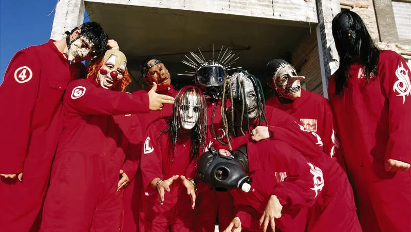

Acervo Bandas - Slipknot
Slipknot

- Slipknot é uma banda americana de metal alternativo formada em 1995, com seu primeiro albúm sendo lançado em 1999.
- Suas músicas mais populares são: Duality, Psychoscocial e The Devil In I.
- É uma das bandas mais populares da história do gênero, sendo os albúns Slipknot e Iowa muito bem recebidos pela crítica.
EDUARDO ANTÔNIO DE CARVALHO LIMA - R.A 5159764